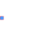
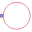

SinglePortLeftPartial model of a single port at the left |

|
Information
This information is part of the Modelica Standard Library maintained by the Modelica Association.
Partial model of single port at the left, defining the medium and the temperature at the port.
Parameters (3)
| medium |
Value: Modelica.Thermal.FluidHeatFlow.Media.Medium() Type: Medium Description: Medium |
|---|---|
| T0 |
Value: Type: Temperature (K) Description: Initial temperature of medium |
| T0fixed |
Value: false Type: Boolean Description: Initial temperature guess value or fixed |
Outputs (2)
| T_port |
Type: Temperature (K) Description: Temperature at flowPort_a |
|---|---|
| T |
Type: Temperature (K) Description: Outlet temperature of medium |
Connectors (1)
| flowPort |
Type: FlowPort_a |
|---|
Components (1)
| medium |
Type: Medium Description: Medium |
|---|
Extended by (4)
|
Modelica.Thermal.FluidHeatFlow.Interfaces.Partials
Partial model of ambient |
|
|  |
Modelica.Thermal.FluidHeatFlow.Sources
Defines absolute pressure level |
|
Modelica.Thermal.FluidHeatFlow.Sources
Ambient with constant properties |
|
|
Modelica.Thermal.FluidHeatFlow.Components
Simple model of a piston in a cylinder |